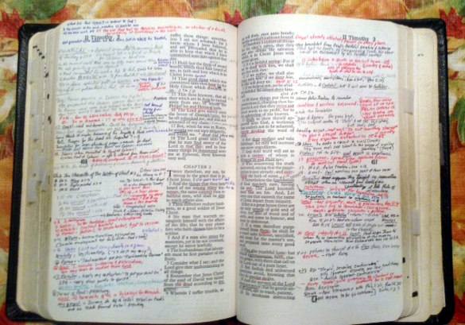

e-Sword Modules for the Mac,
iPad, and Android 
(RETURN to main index)
These modules are for the Mac (e-Sword-x) and iPad e-Sword app.
This set of notes also works with the new Version 14.1 of e-Sword
as well as with the Mac, iPad, iPhone, and the Android version of e-Sword.
|
 |
Use this module on the Mac, the iPad and iPhone and the Android versions of e-Sword, which can be downloaded free at http://e-Sword.net
|
Gann Commentary for the above e-Sword App.
Recently Updated: July 29th, 2025
Reference Modules for the above e-Sword app.
| Acapella Music in NT Worship | A look at the Biblical and historical practice of using instruments in Christian worship. |
| Capital Punishment | A look at capital punishment both from the Old Testament stand point and from the teachings found in the New Testament. |
| Chronology of the New Testament Period | Provides a time line of events of both Biblical and historical significance. |
| Revelation Notes - WG | This module on "The Book of Revelation" provides some of the abundant evidence for the "early date" of Revelation and notes and outline of the book. (Much of this material is also freely available in PowerPoint hyper-linked presentations from wgann@hiwaay.net if you wish to request it.) |
|
David Patterson |
|
| Letter to Romans - by Moses E. Lard | Moses E. Lard's Commentary -- entitled
Letter to Romans |
| Josephus - Outline to Josephus' "Wars" | Gann's outline of Josephus' Wars coverted to the iPad format.
|
| Sermons - Windell Gann | A selection of sermons preached by W. Gann
|
| Topical References - Gann | This e-Sword topic format note deals with a variety of subjects interesting to the Christian, such as "Capital Punishment", "Homosexuality", "Authority of the Scriptures" and several more. All with detailed scriptural links that are quick and easy to read in e-Sword. |
| Walking Thru the Bible - Gann | These are introductions to the books of the Bible and sometimes along with a sermon outline from that book. This is the same material as that found on my web site "Walking Through The Bible" |
(RETURN to main index)